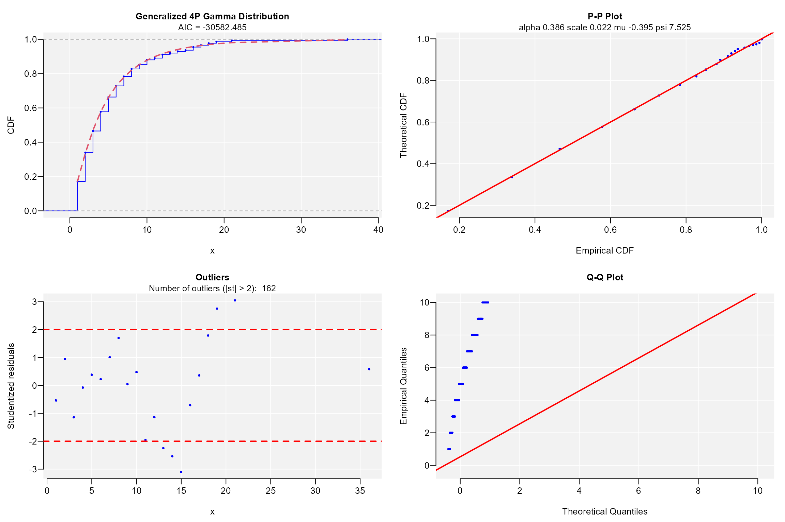
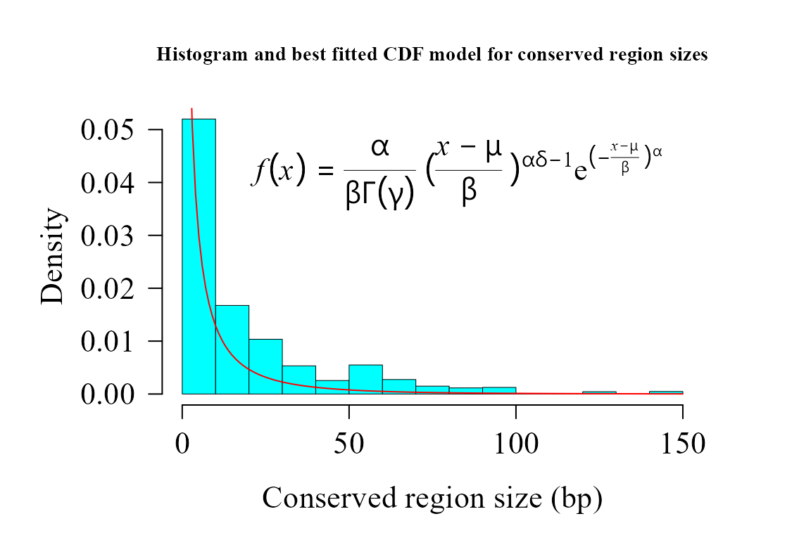

Automorphism analysis on COVID-19 data
Robersy Sanchez
Department of Biology. Pennsylvania State University, University Park, PA 16802rus547@psu.edu
28 December 2024
Source:vignettes/covid_19.Rmd
covid_19.RmdAbstract
The analysis of COVID-19 mutational events in terms of automorphisms is accomplished here. The analysis is accomplished in a pairwise sequence alignments of SARS coronaviruses SARS coronavirus GZ02 (GenBank: AY390556.1: 265-13398_13398-21485) and Bat SARS-like coronavirus isolate bat-SL-CoVZC45 (GenBank: MG772933.1:265-1345513455-21542), nonstructural polyprotein. The analysis indicate that the distribution of the conserved sites according to their sizes can be modeled by generalized gamma distribution.
SARS coronavirus GZ02 vs bat-SL-CoVZC45
URL <- paste0("https://github.com/genomaths/seqalignments/raw/master/",
"COVID-19/AY390556.1_265-13398_13398-21485_RNA-POL_SARS_COVI_GZ02.fas")
covid_aln2 <- readDNAMultipleAlignment(filepath = URL)
#> Warning in .Call2("fasta_index", filexp_list, nrec, skip, seek.first.rec, : reading FASTA file
#> https://github.com/genomaths/seqalignments/raw/master/COVID-19/AY390556.1_265-13398_13398-21485_RNA-POL_SARS_COVI_GZ02.fas:
#> ignored 2 invalid one-letter sequence codes
covid_aut <- automorphisms(
seq = covid_aln2,
group = "Z64",
cube = c("ACGT", "TGCA"),
cube_alt = c("CATG", "GTAC"),
verbose = FALSE)
covid_aut
#> Automorphism object with 7100 ranges and 8 metadata columns:
#> seqnames ranges strand | seq1 seq2 aa1 aa2 coord1 coord2 autm
#> <Rle> <IRanges> <Rle> | <character> <character> <character> <character> <numeric> <numeric> <numeric>
#> [1] 1 1 + | ATG ATG M M 50 50 1
#> [2] 1 2 + | GAG GAG E E 10 10 1
#> [3] 1 3 + | AGC AGC S S 33 33 1
#> [4] 1 4 + | CTT CTT L L 55 55 1
#> [5] 1 5 + | GTT GTC V V 59 57 27
#> ... ... ... ... . ... ... ... ... ... ... ...
#> [7096] 1 7096 + | CTT CTT L L 55 55 1
#> [7097] 1 7097 + | GTT GTT V V 59 59 1
#> [7098] 1 7098 + | AAT AAC N N 3 1 43
#> [7099] 1 7099 + | AAC AAC N N 1 1 1
#> [7100] 1 7100 + | TAA TAA * * 12 12 1
#> cube
#> <character>
#> [1] ACGT
#> [2] ACGT
#> [3] ACGT
#> [4] ACGT
#> [5] ACGT
#> ... ...
#> [7096] ACGT
#> [7097] ACGT
#> [7098] ACGT
#> [7099] ACGT
#> [7100] ACGT
#> -------
#> seqinfo: 1 sequence from an unspecified genome; no seqlengths
counts <- table(covid_aut$cube[ covid_aut$autm != 1 | is.na(covid_aut$autm) ])
par(family = "serif", cex = 0.9, font = 2, mar=c(4,6,4,4))
barplot(counts, main="Automorphism distribution",
xlab="Genetic-code cube representation",
ylab="Fixed mutational events",
col=c("darkblue","red", "darkgreen"),
border = NA, axes = FALSE, #ylim = c(0, 2000),
cex.lab = 2, cex.main = 1.5, cex.names = 2)
axis(2, at = c(0, 500, 1000, 1500, 2000), cex.axis = 1.5)
mtext(side = 1,line = -1.5, at = c(0.7, 1.9, 3.1, 4.3, 5.5),
text = paste0( counts ), cex = 1.4,
col = c("white","yellow", "black"))
Analysis of conserved regions
conserv2 <- conserved_regions(x = covid_aut)
conserv2
#> AutomorphismByCoef object with 3813 ranges and 7 metadata columns:
#> seqnames ranges strand | seq1 seq2 aa1 aa2 autm mut_type cube
#> <Rle> <IRanges> <Rle> | <character> <character> <character> <character> <numeric> <character> <character>
#> [1] 1 1-4 + | ATG ATG M M 1 HHH ACGT
#> [2] 1 1-4 + | GAG GAG E E 1 HHH ACGT
#> [3] 1 1-4 + | AGC AGC S S 1 HHH ACGT
#> [4] 1 1-4 + | CTT CTT L L 1 HHH ACGT
#> [5] 1 7 + | GGT GGT G G 1 HHH ACGT
#> ... ... ... ... . ... ... ... ... ... ... ...
#> [3809] 1 7093-7094 + | GAT GAT D D 1 HHH ACGT
#> [3810] 1 7096-7097 + | CTT CTT L L 1 HHH ACGT
#> [3811] 1 7096-7097 + | GTT GTT V V 1 HHH ACGT
#> [3812] 1 7099-7100 + | AAC AAC N N 1 HHH ACGT
#> [3813] 1 7099-7100 + | TAA TAA * * 1 HHH ACGT
#> -------
#> seqinfo: 1 sequence from an unspecified genome; no seqlengthsNext, function fitCDF is applied to find the best fitted probability function to the the sizes of conserved regions.
widths <- width(conserv2)
dist2 <- fitCDF(widths, distNames = c(3, 7, 9, 10, 11, 12, 19, 20), plot = TRUE,
loss.fun = "cauchy")
#>
#> *** Fitting Half-Normal distribution ...
#> .Fitting Done.
#>
#> *** Fitting Gamma distribution ...
#> .Fitting Done.
#>
#> *** Fitting Generalized 4P Gamma distribution ...
#> .Fitting Done.
#>
#> *** Fitting Generalized 3P Gamma distribution ...
#> .Fitting Done.
#>
#> *** Fitting Weibull distribution ...
#> .Fitting Done.
#>
#> *** Fitting 3P Weibull distribution ...
#> .Fitting Done.
#>
#> *** Fitting Exponential distribution ...
#> .Fitting Done.
#>
#> *** Fitting 2P Exponential distribution ...
#> .Fitting Done.
#> * Estimating Studentized residuals for Generalized 4P Gamma distribution
#> * Plots for Generalized 4P Gamma distribution...
dist2
#> ggamma CDF model
#> ------
#> Parameters:
#> Estimate Std. Error t value Pr(>|t|)
#> alpha 0.38596938 0.01174701 32.85681 < 2.22e-16 ***
#> scale 0.02195697 0.00742671 2.95649 0.0031308 **
#> mu -0.39511486 0.01856885 -21.27837 < 2.22e-16 ***
#> psi 7.52471426 0.52104576 14.44156 < 2.22e-16 ***
#> ---
#> Signif. codes: 0 '***' 0.001 '**' 0.01 '*' 0.05 '.' 0.1 ' ' 1
#>
#> Residual standard error: 1.809493e-05 on 3809 degrees of freedom
#> Number of iterations to termination: 222
#> Reason for termination: Relative error in the sum of squares is at most `ftol'.
#>
#> Goodness of fit:
#> Adj.R.Square rho R.Cross.val AIC
#> gof 1 1 0.9998617 -30582.48
par(lwd = 0.5, cex.axis = 2, cex.lab =1.4,
cex.main = 2, mar=c(5,6,4,4), family = "serif")
hist(widths, 20, freq = FALSE, las = 1, family = "serif",
col = "cyan1", cex.main = 0.9,
main = "Histogram and best fitted CDF model for conserved region sizes",
xlab = "Conserved region size (bp)", yaxt = "n", ylab="", cex.axis = 1.4)
axis(side = 2, cex.axis = 1.4, las = 2)
mtext("Density", side = 2, cex = 1.4, line = 3.5)
x1 <- seq(1, 35, by = 1)
txt <- TeX(r'($\textit{f}(\textit{x}) = \frac{\alpha}{\beta\Gamma(\gamma)}
{(\frac{\textit{x - \mu}}{\beta})}^{\alpha\delta-1}
e^{(-\frac{\textit{x - \mu}}{\beta})^\alpha}$)')
lines(x1, dggamma(x1,
alpha = coef(dist2$bestfit)[1],
scale = coef(dist2$bestfit)[2],
mu = coef(dist2$bestfit)[3],
psi = coef(dist2$bestfit)[4]
),
col = "red", lwd = 1)
mtext(txt, side = 3, line = -4, cex = 1.4, adj = 0.7)
After apply Bootstrap test for Goodness of fit, tt seems to be that we have no reasons to reject the hypothesis that the sizes of conserved regions follows Generalized Gamma distribution.
mcgoftest(
varobj = widths,
model = dist2,
stat = "ks")
#> *** Permutation GoF testing based on Kolmogorov-Smirnov statistic ( parametric approach ) ...
#> KS.stat.D mc_p.value KS.stat.p.value sample.size num.sampl
#> 1.733499e-01 1.000000e+00 5.983316e-100 3.813000e+03 9.990000e+02
mcgoftest(
varobj = widths,
model = dist2,
stat = "ad")
#> *** Permutation GoF testing based on Anderson–Darling statistic ( parametric approach ) ...
#> AD.stat mc_p.value sample.size num.sampl
#> 119.2847 1.0000 3813.0000 999.0000Grouping automorphism by automorphism’s coefficients. Types of mutations
autby_coef2 <- automorphism_bycoef(covid_aut)
autby_coef2 <- autby_coef2[ autby_coef2$autm != 1 & autby_coef2$autm != -1 ]Alignment gaps denoting indel mutations are labeled as “—”.
counts2 <- table(autby_coef2$mut_type)
counts2 <- sort(counts2, decreasing = TRUE)
count. <- counts2[ counts2 > 9 ]
par(family = "serif", cex.axis = 2, font = 2, las = 1,
cex.main = 1.4, mar = c(6,3,4,4))
barplot(count., main="Automorphism distribution per Mutation type",
col = colorRampPalette(c("red", "yellow", "blue"))(36),
border = NA, axes = FALSE,las=2)
axis(side = 2, cex.axis = 2, line = -1.8 )
counts2
#>
#> HHY HHW HHR HHK HHM YHH RHH YHW HHS HRH RHW KHH YHK MHH --- YHR WHH MHW RHY RYH SHH HWH HYW MHK RHK HRR HMH KHW WHW YHM
#> 841 481 447 119 96 60 55 42 36 33 33 30 30 29 27 23 22 21 20 20 20 18 16 15 15 14 13 13 13 13
#> YHS HRY HYH HSH MHR HMW HWY HYY MHY SHR WHR HKY HMY RHR SHK WHM KHY KSH MHM RMH RRW RRY WSH KYH RMW RRH SHM SHW SHY YHY
#> 13 12 11 10 10 9 9 9 9 9 9 7 7 7 7 7 6 6 6 6 6 6 6 5 5 5 5 5 5 5
#> HKH HMR HSW HYR MRW RHM RYM WHK HKW HWK HWW HYM KHK KHM KHR KHS MMR MYH RHS RMR RRK RWW RYW RYY SMH WHY WSM HMK HMM HRK
#> 4 4 4 4 4 4 4 4 3 3 3 3 3 3 3 3 3 3 3 3 3 3 3 3 3 3 3 2 2 2
#> HSY HWM KMH KSM KWH MHS MMH MMM MMW MRH MRK RMY RSY RWK RWR RYK SYH WHS WKK WYK WYW YSH HMS HRM HRW HSK HWR HYK HYS KKK
#> 2 2 2 2 2 2 2 2 2 2 2 2 2 2 2 2 2 2 2 2 2 2 1 1 1 1 1 1 1 1
#> KMW KSW KWW KWY KYK KYW KYY MKH MSM MWH MWM MYK MYM MYR MYW RKH RKW RMK RRS RSH RSW RWY RYR SHS SKW SMK SMS SMW SRH SRM
#> 1 1 1 1 1 1 1 1 1 1 1 1 1 1 1 1 1 1 1 1 1 1 1 1 1 1 1 1 1 1
#> SWK SWM SWS SWW SYW WKH WKM WMH WMK WMW WMY WRH WSW WSY WWH WWY WYM WYR WYS YKH YKR YMH YMM YMS YMW YRH YWH YWM YWS YWY
#> 1 1 1 1 1 1 1 1 1 1 1 1 1 1 1 1 1 1 1 1 1 1 1 1 1 1 1 1 1 1
#> YYH
#> 1SARS coronavirus GZ02 vs bat-SL-CoVZC45 and Bat SARS-like coronavirus isolate Rs7327
data(covid_autm, package = "GenomAutomorphism")
covid_autm
#> Automorphism object with 9722 ranges and 8 metadata columns:
#> seqnames ranges strand | seq1 seq2 aa1 aa2 coord1 coord2 autm
#> <Rle> <IRanges> <Rle> | <character> <character> <character> <character> <numeric> <numeric> <numeric>
#> [1] 1 1 + | ATG ATG M M 50 50 1
#> [2] 1 2 + | GAG GAG E E 10 10 1
#> [3] 1 3 + | AGC AGC S S 33 33 1
#> [4] 1 4 + | CTT CTT L L 55 55 1
#> [5] 1 5 + | GTT GTT V V 59 59 1
#> ... ... ... ... . ... ... ... ... ... ... ...
#> [9718] 1 9718 + | TCA TCA S S 28 28 1
#> [9719] 1 9719 + | ACT ACT T T 19 19 1
#> [9720] 1 9720 + | CAG CAG Q Q 6 6 1
#> [9721] 1 9721 + | GCA GCA A A 24 24 1
#> [9722] 1 9722 + | TAA TAA * * 12 12 1
#> cube
#> <character>
#> [1] ACGT
#> [2] ACGT
#> [3] ACGT
#> [4] ACGT
#> [5] ACGT
#> ... ...
#> [9718] ACGT
#> [9719] ACGT
#> [9720] ACGT
#> [9721] ACGT
#> [9722] ACGT
#> -------
#> seqinfo: 1 sequence from an unspecified genome; no seqlengths
conserv <- conserved_regions(covid_autm)
conserv
#> AutomorphismByCoef object with 6348 ranges and 7 metadata columns:
#> seqnames ranges strand | seq1 seq2 aa1 aa2 autm mut_type cube
#> <Rle> <IRanges> <Rle> | <character> <character> <character> <character> <numeric> <character> <character>
#> [1] 1 1-19 + | ATG ATG M M 1 HHH ACGT
#> [2] 1 1-19 + | GAG GAG E E 1 HHH ACGT
#> [3] 1 1-19 + | AGC AGC S S 1 HHH ACGT
#> [4] 1 1-19 + | CTT CTT L L 1 HHH ACGT
#> [5] 1 1-19 + | GTT GTT V V 1 HHH ACGT
#> ... ... ... ... . ... ... ... ... ... ... ...
#> [6344] 1 9683-9722 + | GGA GGA G G 1 HHH ACGT
#> [6345] 1 9683-9722 + | TCT TCT S S 1 HHH ACGT
#> [6346] 1 9683-9722 + | TCA TCA S S 1 HHH ACGT
#> [6347] 1 9683-9722 + | GCA GCA A A 1 HHH ACGT
#> [6348] 1 9683-9722 + | TAA TAA * * 1 HHH ACGT
#> -------
#> seqinfo: 1 sequence from an unspecified genome; no seqlengths
consvr <- c(conserv, conserv2)
widths <- width(consvr)
dist <- fitCDF(widths, distNames = c(2, 3, 7, 9, 10, 11, 19, 20), plot = TRUE,
loss.fun = "cauchy")
#>
#> *** Fitting Log-normal distribution ...
#> .Fitting Done.
#>
#> *** Fitting Half-Normal distribution ...
#> .Fitting Done.
#>
#> *** Fitting Gamma distribution ...
#> .Fitting Done.
#>
#> *** Fitting Generalized 4P Gamma distribution ...
#> .Fitting Done.
#>
#> *** Fitting Generalized 3P Gamma distribution ...
#> .Fitting Done.
#>
#> *** Fitting Weibull distribution ...
#> .Fitting Done.
#>
#> *** Fitting Exponential distribution ...
#> .Fitting Done.
#>
#> *** Fitting 2P Exponential distribution ...
#> .Fitting Done.
#> * Estimating Studentized residuals for Generalized 4P Gamma distribution
#> * Plots for Generalized 4P Gamma distribution...
dist
#> ggamma CDF model
#> ------
#> Parameters:
#> Estimate Std. Error t value Pr(>|t|)
#> alpha 0.591610381 0.003539813 167.13041 < 2.22e-16 ***
#> scale 8.652891132 0.218974837 39.51546 < 2.22e-16 ***
#> mu 0.549870141 0.005491076 100.13888 < 2.22e-16 ***
#> psi 1.352270767 0.015700233 86.13062 < 2.22e-16 ***
#> ---
#> Signif. codes: 0 '***' 0.001 '**' 0.01 '*' 0.05 '.' 0.1 ' ' 1
#>
#> Residual standard error: 5.502277e-05 on 10157 degrees of freedom
#> Number of iterations to termination: 24
#> Reason for termination: Relative error in the sum of squares is at most `ftol'.
#>
#> Goodness of fit:
#> Adj.R.Square rho R.Cross.val AIC
#> gof 1 1 0.9996438 -69784.96Joining the datasets increases the sample size and improved predictions in respect to the comparison SARS coronavirus GZ02 vs Bat SARS-like coronavirus alone.
par(lwd = 0.5, cex.axis = 2, cex.lab =1.4,
cex.main = 2, mar=c(5,6,4,4), family = "serif")
hist(widths, 14, freq = FALSE, las = 1, family = "serif",
col = "cyan1", cex.main = 0.9,
main = "Histogram and best fitted CDF model for conserved region sizes",
xlab = "Conserved region size (bp)", yaxt = "n", ylab="", cex.axis = 1.4)
axis(side = 2, cex.axis = 1.4, las = 2)
mtext("Density", side = 2, cex = 1.4, line = 3.5)
x1 <- seq(1, 150, by = 1)
txt <- TeX(r'($\textit{f}(\textit{x}) = \frac{\alpha}{\beta\Gamma(\gamma)}
{(\frac{\textit{x - \mu}}{\beta})}^{\alpha\delta-1}
e^{(-\frac{\textit{x - \mu}}{\beta})^\alpha}$)')
lines(x1, dggamma(x1,
alpha = coef(dist$bestfit)[1],
scale = coef(dist$bestfit)[2],
psi = coef(dist$bestfit)[3]
),
col = "red", lwd = 1)
mtext(txt, side = 3, line = -4, cex = 1.4, adj = 0.7)
mcgoftest(
varobj = widths,
model = dist,
stat = "ks")
#> *** Permutation GoF testing based on Kolmogorov-Smirnov statistic ( parametric approach ) ...
#> KS.stat.D mc_p.value KS.stat.p.value sample.size num.sampl
#> 8.628456e-02 1.000000e+00 3.919415e-66 1.016100e+04 9.990000e+02
cat("\n===========================\n")
#>
#> ===========================
mcgoftest(
varobj = widths,
model = dist,
stat = "ad")
#> *** Permutation GoF testing based on Anderson–Darling statistic ( parametric approach ) ...
#> AD.stat mc_p.value sample.size num.sampl
#> 70.64955 1.00000 10161.00000 999.00000Grouping automorphism by automorphism’s coefficients
autby_coef <- automorphism_bycoef(covid_autm)
autby_coef <- c(autby_coef, autby_coef2)
autby_coef <- autby_coef[ autby_coef$autm != 1 & autby_coef$autm != -1 ]Alignment gaps denoting indel mutations are labeled as “—”.
counts <- table(autby_coef$mut_type)
counts <- sort(counts, decreasing = TRUE)
count. <- counts[ counts > 9 ]
par(family = "serif", cex.axis = 2, font = 2, las = 1,
cex.main = 1.4, cex.lab = 2, mar = c(6,4,4,1))
barplot(count., main="Automorphism distribution per Mutation type",
col = colorRampPalette(c("red", "yellow", "blue"))(36),
border = NA, axes = FALSE,las=2)
axis(side = 2, cex.axis = 2, line = -1.8 )
counts
#>
#> HHY HHR HHW HHK HHM YHH RHH HRH HHS YHW --- MHH KHH RHW WHH YHK HYH YHR RHY MHW RYH SHH HWH HYW
#> 1266 636 570 151 121 94 79 51 49 47 43 41 36 35 33 33 29 26 24 23 22 22 21 21
#> HMH RHK HRR MHK WHW YHM KHW HRY YHS HMW MHR HSH HWY HYY MHY RHR SHR WHR YHY HMY KHY RMH RRY HKH
#> 20 19 17 17 17 17 16 15 14 11 11 10 10 10 9 9 9 9 9 8 8 8 8 7
#> HKY HMR KSH RMW SHK SHW WHM MHM RHM RRW RYY SHM SHY WSH HYR KYH RRH RYW HSW HWW KHK KHR MRH MRW
#> 7 7 7 7 7 7 7 6 6 6 6 6 6 6 5 5 5 5 4 4 4 4 4 4
#> RRK RYM WHK WHY HKW HMK HWK HYK HYM KHM KHS KMH KSW MHS MMM MMR MYH RHS RKW RMR RMY RSW RWW RYK
#> 4 4 4 4 3 3 3 3 3 3 3 3 3 3 3 3 3 3 3 3 3 3 3 3
#> SMH SRH SYH WMH WSM WSY WYW YWH HMM HRK HSY HWM KMW KSM KWH MMH MMW MRK MWH MWM RSY RWK RWR SMW
#> 3 3 3 3 3 3 3 3 2 2 2 2 2 2 2 2 2 2 2 2 2 2 2 2
#> SRM WHS WKK WMS WRH WWH WWY WYK WYM YKH YSH YWM YWY YYH HKK HKR HMS HRM HRW HSK HSR HWR HWS HYS
#> 2 2 2 2 2 2 2 2 2 2 2 2 2 2 1 1 1 1 1 1 1 1 1 1
#> KKK KKS KRK KRY KWW KWY KYK KYW KYY MKH MKM MRM MSM MWS MWW MYK MYM MYR MYW MYY RKH RMK RRM RRS
#> 1 1 1 1 1 1 1 1 1 1 1 1 1 1 1 1 1 1 1 1 1 1 1 1
#> RSH RSK RWY RYR SHS SKW SKY SMK SMS SWK SWM SWR SWS SWW SWY SYW WKH WKM WMK WMW WMY WRY WSW WWK
#> 1 1 1 1 1 1 1 1 1 1 1 1 1 1 1 1 1 1 1 1 1 1 1 1
#> WWS WYH WYR WYS YKR YKY YMH YMM YMS YMW YRH YRY YWS YWW YYR
#> 1 1 1 1 1 1 1 1 1 1 1 1 1 1 1